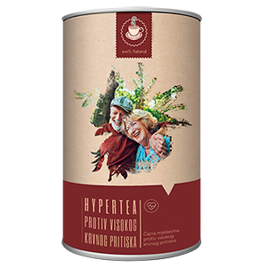

HIPERTENSIÓN Y MEDICAMENTOS CAROS - ¡ESTO PERMANECE EN EL PASADO!
El infarto y el accidente cerebrovascular son la causa de casi el 70% de todas las muertes en el mundo. Siete de cada diez personas mueren debido a un bloqueo en las arterias del corazón o el cerebro. En casi todos los casos, la causa de un final tan terrible es un aumento en la presión debido a la hipertensión. `Asesino silencioso` es como la hipertensión es llamada por los cardiólogos, se cobra la vida de millones de personas cada año.

José Manuel Fernández
Cardiólogo, científico,
candidato de ciencias médicas, docente, catedrático, académico. Tiene
experiencia laboral y pasantías en universidades de diferentes países.
Membresía en asociaciones profesionales de cardiología: Academia de Medicina
de Nueva York, Sociedad de Cirugía Cardiovascular, Sociedad de Cirugía
Vascular y Sociedad Europea de Cirugía Cardiovascular.
Experiencia
Laboral - 22 años
Sobre el problema:
No es ningún secreto que las enfermedades cardiovasculares son líderes mundiales entre las enfermedades que cobran vidas humanas. Por ejemplo, la hipertensión parece ser la principal causa de ataques cardíacos y accidentes cerebrovasculares, que se registran en el registro cardiovascular. Por supuesto, otras enfermedades también afectan al cuerpo, pero es la hipertensión y las caídas de presión las que empujan el gatillo, enviando a una persona a otro mundo.
Si hablamos de números específicos, luego, alrededor del 77-78% de las muertes en casos `naturales` son el resultado de la hipertensión. En términos absolutos, esto representa alrededor de 1,54 millones de muertes en 2015 y 1,49 millones en 2014. Esto significa que el número es realmente enorme y aterrador. Hasta hace poco, nadie sabía de la magnitud de esta catástrofe, porque no se llevaron a cabo estadísticas y análisis detallados. De 2011 a 2015, recopilamos una gran cantidad de datos, lo que llevó a conclusiones muy decepcionantes.
Los aumentos repentinos de presión provocan una enorme sobrecarga del músculo cardíaco, que tarde o temprano provocará insuficiencia cardíaca. En términos generales, cada vez que aumenta la presión, sobrecarga el corazón de 10 a 20 veces. Si hablamos del desarrollo final de la enfermedad, la presión arterial siempre conduce al mismo resultado: la muerte. Por cierto, si lo identifica como la principal causa de muerte, ocurre en el 89% de los casos. Es decir, en el 89% de los casos de hipertensión termina en infarto , accidente cerebrovascular y muerte. Además, si hace 20-30 años, los pacientes con este diagnóstico tenían una buena oportunidad de vivir de 10 a 20 años, ahora aproximadamente 2/3 (dos tercios) de los pacientes mueren dentro de los primeros cinco años después de la enfermedad.
Especialmente aterrador es el hecho de que muchas personas no se dan cuenta de que tienen hipertensión . Y pierden la oportunidad de cambiar algo, simplemente están condenados.
Estos síntomas pueden indicar que tiene hipertensión:
- Dolor de cabeza
- Latidos rápidos
- Manchas negras ante los ojos
- Apatía, irritabilidad, somnolencia.
- Visión borrosa
- Sudoración
- Fatiga crónica
- Hinchazón de la cara
- Entumecimiento de dedos y escalofríos.
- Golpes de presión
Incluso uno de estos síntomas debería hacer pensar. Y si hay dos, no hay duda de que tiene síntomas de hipertensión. Por cierto, según las estadísticas El 67% de todos los pacientes con hipertensión no saben que están enfermos.
¿Cómo protegerse y vencer la enfermedad?
En primer lugar, debe comprender que debe abandonar muchos malos hábitos, especialmente el tabaquismo y el alcohol. Esto solo agrava la situación de la presión arterial. El siguiente hecho es que es posible y necesario bajar la presión, de lo contrario no hay posibilidad de recuperación. Pero la mala noticia es que incluso si libera la presión arterial, no curará la enfermedad en sí. Además, si toma medicamentos y tiene una caída brusca de la presión arterial, esto puede causar una reacción extremadamente negativa en el cuerpo, así como provocar un ataque cardíaco. Sin mencionar el hecho de que todas las pastillas son muy pesadas para el hígado.

De hecho, por el momento, el único suplemento que se recomienda oficialmente para el tratamiento de la hipertensión y que utilizan los cardiólogos en su trabajo es . El desarrollo de la herramienta comenzó hace varios años y tuvo un gran éxito muy rápidamente. El suplemento fue desarrollado por un equipo de especialistas que trabajó en estrecha colaboración con los cardiólogos de práctica. El resultado es un remedio único que, a diferencia de todos los demás medicamentos, trata de manera confiable la hipertensión y elimina su causa.

Los expertos han descubierto que el aditivo actúa sobre la causa de la enfermedad, por lo que puede deshacerse por completo de la hipertensión. Los síntomas desaparecen en las primeras seis horas después de la ingestión, lo que se asocia con su componente activo. Esto hace posible inmediatamente después del inicio del curso, como dicen, respirar profundamente.
El tono vascular se restaura completamente después del curso del tratamiento. Por tanto, es eficaz en todas las etapas de la hipertensión. El suplemento ha pasado naturalmente los ensayos clínicos. Quiero señalar que en el proceso de prueba, ha demostrado la eficiencia, en contraste con los productos extranjeros. El mejor resultado de los preparados occidentales es un 20-21% de curación. En el caso de , estamos hablando de un 75-77% de mejoría. En el 33% restante de los casos, la condición se estabiliza. La presión arterial no aumenta y se siente bien.
Actualmente el remedio original se puede pedir completando el formulario de pedido oficial a continuación.
Se lo compré a mi abuela, ella siempre tiene problemas con la presión arterial. Es poco probable que ella misma haga un pedido en línea o incluso por teléfono. Y decidí hacer un pedido para ella. La ayudó, diría, al 100%, aunque los problemas eran de mucho tiempo y globales; durante varios años tomó medicamentos muy fuertes. ¡Pero ahora todo está bien! ¡Agradecida!

Acabo de solicitar 2 tratamientos a la vez. En nuestra familia, en el lado femenino, absolutamente todo el mundo tiene problemas con la presión. Mueren, la mayoría de las veces de un ataque cardíaco.

Casi todas las mujeres de mi familia murieron de ataques cardíacos. Y todos tenían problemas de presión. Ordenaré este remedio para la prevención, no seré otro número.

Se lo pedí a mi hermana hace dos meses. Ella sufrió presión durante mucho tiempo. No tienes idea de cómo me agradeció más tarde por ordenar para ella este medio

Me siento mucho mejor después del curso del tratamiento , como si estuviera rejuvenecida. Incluso mi apariencia ha cambiado. Me volví más joven y saludable.
¡Esto ayudó mucho a mi esposo! ¡Su presión arterial se ha estabilizado! Solo un curso fue suficiente para él. ¡Ahora haré el pedido para mí! Esto ayuda mucho.

¡Hay buenas críticas para esta herramienta en Internet! Definitivamente tengo que pedirlo, ¡estoy cansada de la presión! ¡Muchos gracias!
Escuché por primera vez sobre el suplemento hace unos tres meses y lo ordené de inmediato. Los problemas de presión eran espantosos. Pero después del primer día de tomar, la presión arterial nunca volvió a aumentar. Simplemente disfruto la vida.